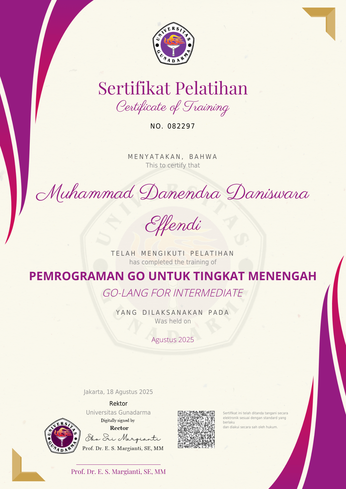
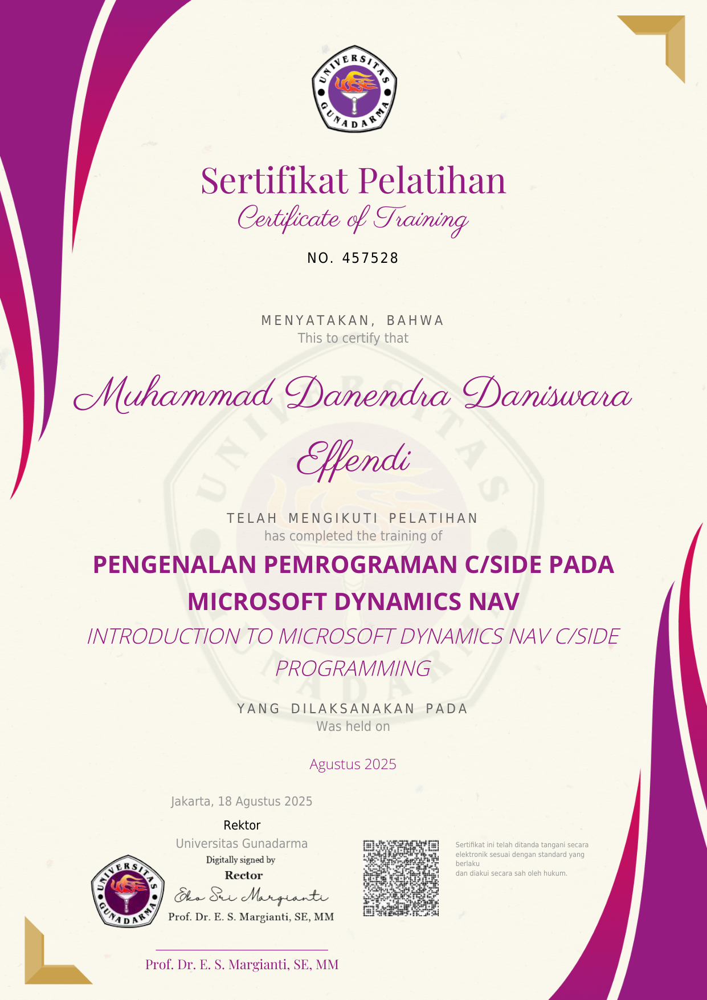
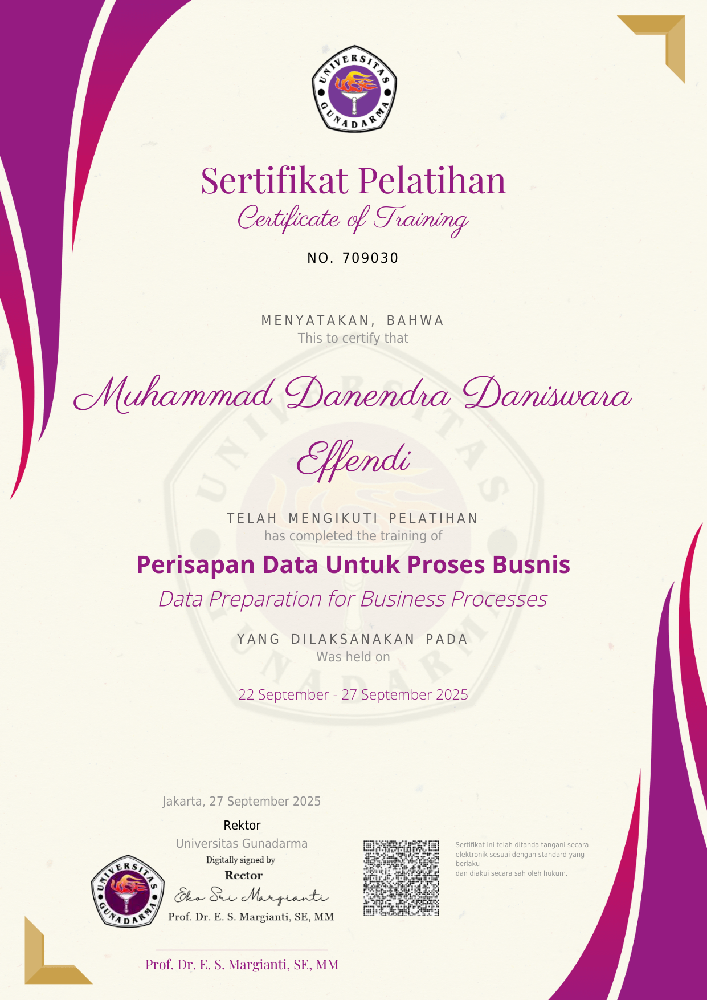
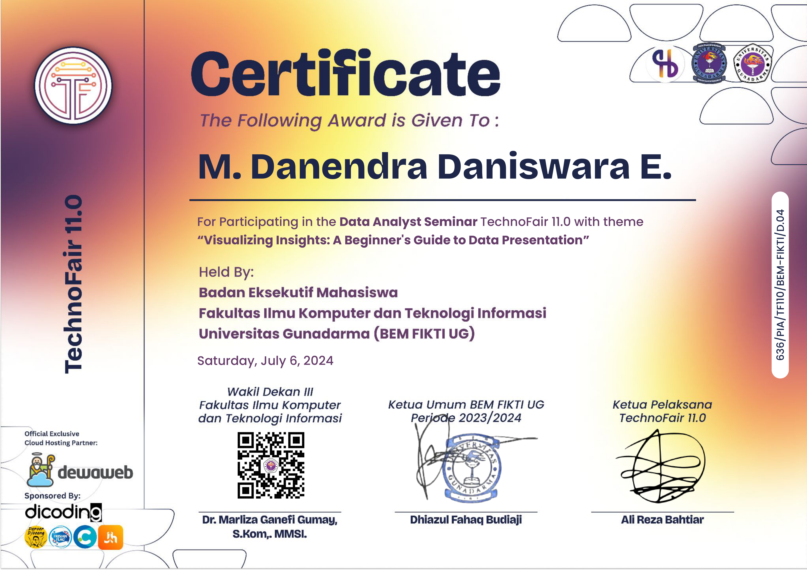
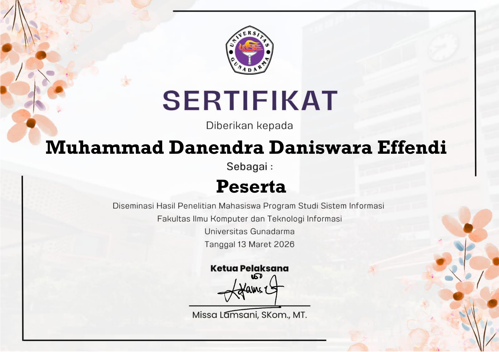
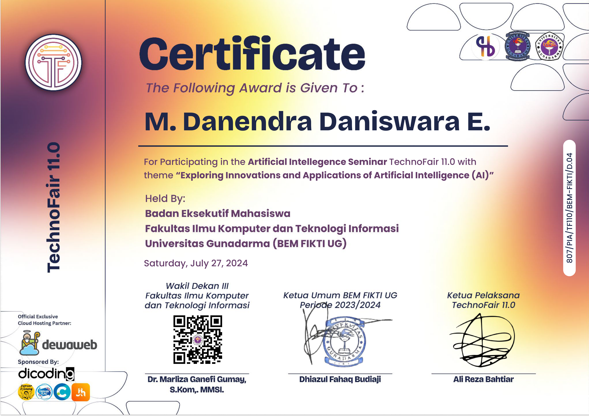
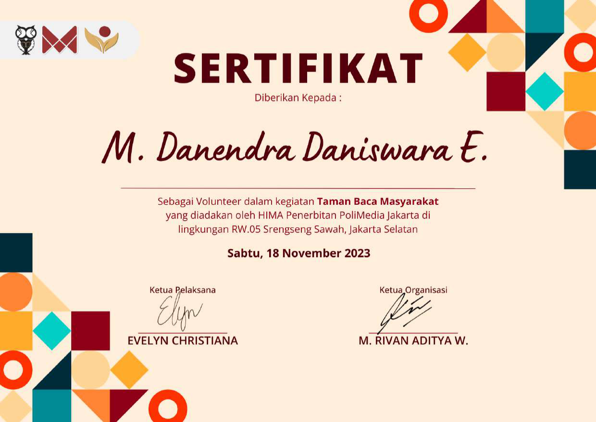

Penyaringan Berdasarkan Domain Keahlian
Fundamental ERP
Konsep arsitektur Enterprise Resource Planning, proses bisnis ADempiere, Microsoft Dynamics NAV, & SAP.
Fundamental Web Programming
Prinsip fundamental aplikasi web: sintaksis Go, J2EE/JSP, arsitektur .NET/C#, ASP.NET, serta tata kelola CSS.
Go-Lang for Beginner
Sintaksis Go, struktur structs, pointers, slices, alur kendali, server web internal, serialisasi JSON, & Polymer.
Microsoft Dynamics NAV Beginner
Operasionalisasi ERP NAV, buku besar umum, dimensi akun, manajemen persediaan, siklus pengadaan, dan otorisasi.

PDF ResmiGo-Lang for Intermediate
Pengujian unit otomatis, metodologi Test Driven Development (TDD), integrasi kueri SQL, penanganan HTTP, dan deployment.

PDF ResmiDynamics NAV C/SIDE Program
Pemrograman lingkungan C/SIDE dan bahasa C/AL, penanganan pemicu tabel, perancangan formulir, ekspresi variabel, & fungsi intrinsik.

PDF ResmiData Prep for Business Process
Pipeline identifikasi kebutuhan data bisnis operasional, pengumpulan instrumen, evaluasi kualitas, transformasi, dan validasi.
Creating Business Intelligence
Pemodal objek data analitik, perancangan arsitektur Business Intelligence, formulasi KPI, & pelaporan dashboard eksekutif.

PDF ResmiTechnoFair 11.0 – Data Analyst
Seminar Data Analyst: Visualizing Insights. Metodologi pembersihan data mentah, visualisasi data bisnis, dan penyajian wawasan statistik.

PDF ResmiDiseminasi Riset Sistem Informasi
Forum ilmiah diseminasi hasil penelitian mahasiswa Sistem Informasi: telaah arsitektur sistem, publikasi riset, dan tata kelola teknologi informasi.

PDF ResmiTechnoFair 11.0 – Artificial Intelligence
Seminar nasional AI: Exploring Innovations and Applications of AI. Prinsip Machine Learning terapan, otomasi komputasi cerdas, dan tren industri.

PDF ResmiVolunteer Taman Baca Masyarakat
Pengabdian masyarakat sebagai sukarelawan Taman Bacaan di Srengseng Sawah: pendampingan literasi anak, tata kelola buku, dan kegiatan edukatif warga.
Seluruh 12 sertifikasi di atas telah melalui evaluasi kompetensi terstruktur oleh Universitas Gunadarma dan instansi terkait, dilengkapi identitas lisensi unik (Credential ID) serta dokumen digital PDF otentik yang dapat diunduh secara mandiri maupun terpadu.